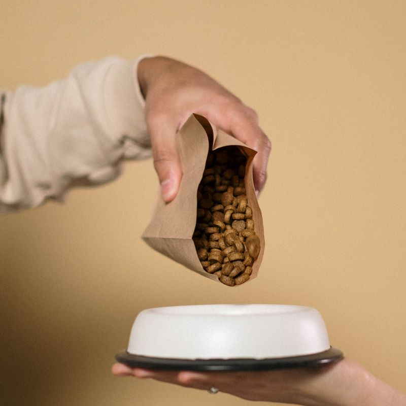
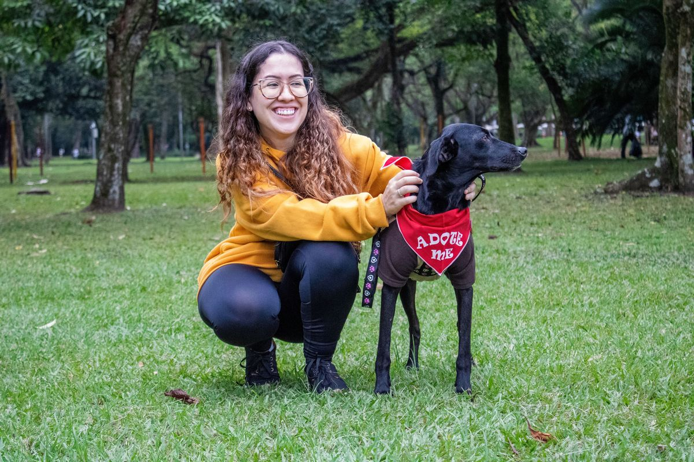

Resgate
Resgate e reabilitação
Acolhemos animais em risco e oferecemos cuidado veterinário até que estejam prontos para a adoção.
ONG Amigos dos Animais
Atuamos no resgate de animais em risco, na reabilitação veterinária e na adoção responsável.
Acolhemos animais em risco e oferecemos cuidado veterinário até que estejam prontos para a adoção.

Financeira: valores de qualquer quantia ajudam a pagar consultas, vacinas e castrações.
Suprimentos:

Você pode apoiar o dia a dia do abrigo com tarefas como: